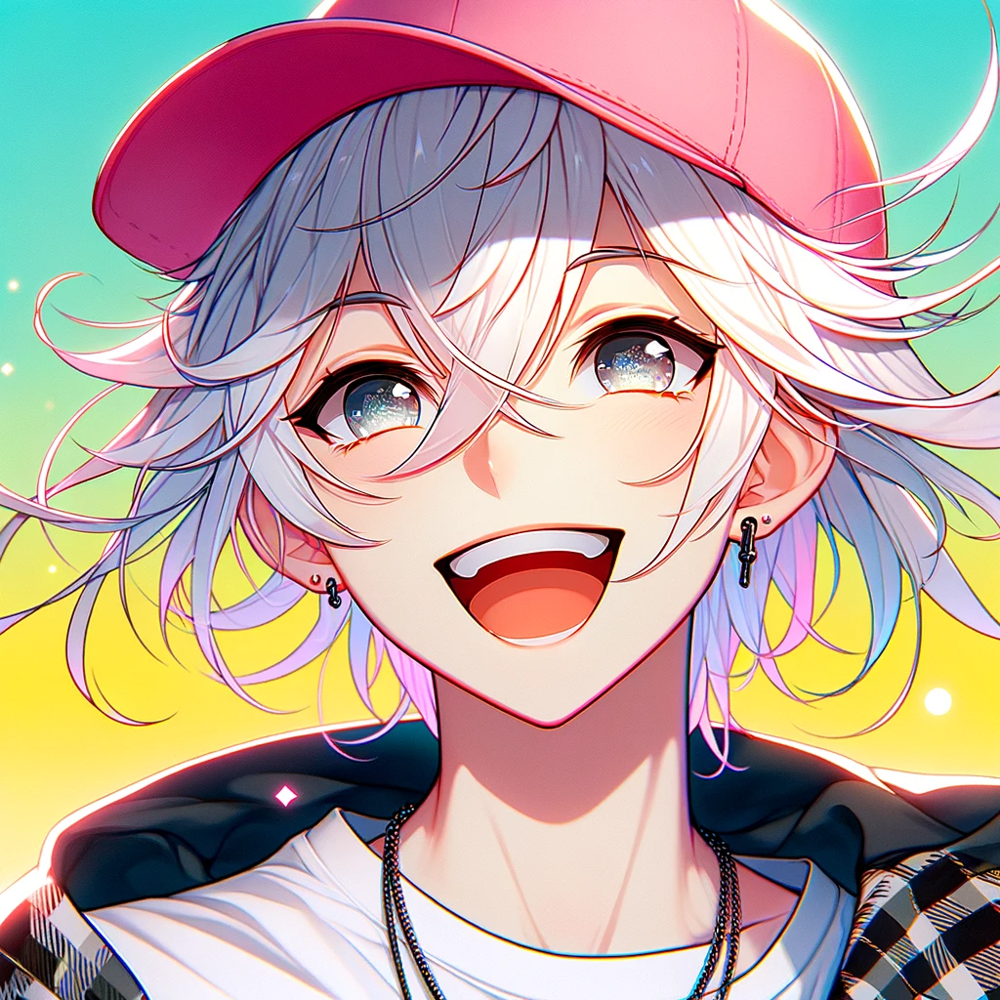

¡Descubre BensWorld: Donde nuestro objetivo es tu diversión!
Descubre un rincón donde cada bloque cuenta una historia emocionante. En BensWorld, no solo somos una comunidad, sino una familia apasionada que comparte la visión de hacer que cada experiencia de juego sea extraordinaria.
Participa en nuestro constante desarrollo: tus ideas dan forma a un servidor en evolución. Disfruta de una experiencia sin interrupciones gracias a nuestra tecnología de vanguardia. BensWorld no es solo un destino de juego; es tu hogar en el mundo de Minecraft, donde la diversión y la excelencia se entrelazan para ofrecerte algo único. ¡Te esperamos para construir, explorar y jugar juntos!
Fundador: Creando el Mundo de Nuestros Sueños
En esta sección, honramos al visionario detrás de nuestro servidor de Minecraft: Ben. Esta mente maestra, apasionada por la creación y la comunidad, ha dado vida a un mundo digital lleno de emocionantes desafíos y aventuras. Acompáñanos mientras exploramos su visión única y descubrimos cómo ha dejado su marca en cada rincón de nuestro servidor. ¡Bienvenidos al legado del creador!

Bencraft6790
Información de contacto:
Nombre: Benjamin A. Bohn
Correo Electrónico: benjabohn5@gmail.com
Creador digital en desarrollo:
Soy un apasionado jugador de Minecraft y, a mis 16 años, estoy emocionado de combinar mi creatividad y habilidades técnicas para construir algo único. Actualmente, estoy desarrollando una página web para nuestro servidor de Minecraft, donde la comunidad puede conectarse, compartir experiencias y explorar las emocionantes aventuras que hemos creado juntos. Mi objetivo es proporcionar un espacio acogedor y emocionante para jugadores de todas las edades. ¡Únete a nosotros y vive la magia de nuestro servidor! 🎮✨
Discord: bencraft0
LinkedIn